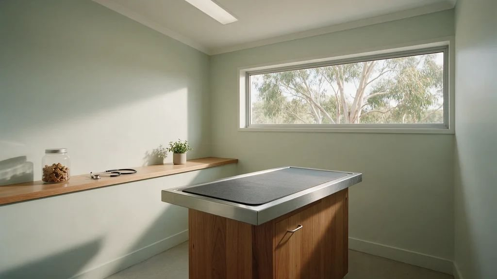
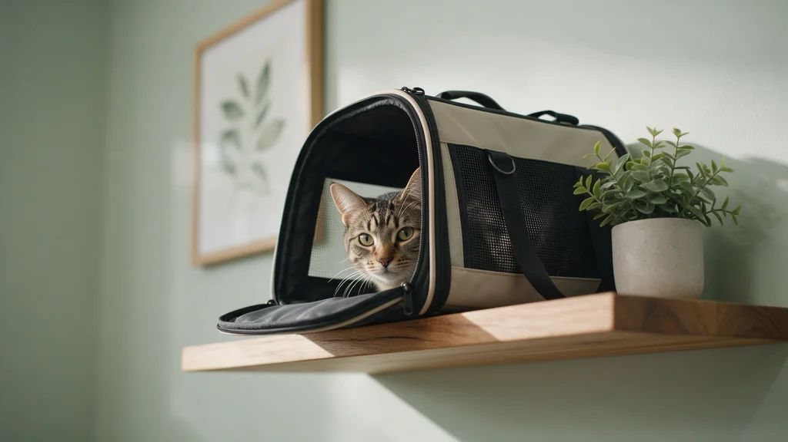

Unhurried care for dogs.cats.rabbits.birds.
A vet-owned hospital in Kestrel Vale with 30-minute consults, an in-house lab and a team who take the time to explain every option.
Everything your pet needs, under one roof
From a puppy's first needle to a senior cat's kidney care, we cover general practice, surgery, dentistry and diagnostics in our own purpose-built hospital.
Wellness and vaccinations
Nose-to-tail health checks, tailored vaccine schedules and a clear plan for the year ahead.
Learn moreDental care
Scale and polish under anaesthetic, digital dental X-rays and extractions done gently.
Learn moreSurgery
Desexing, soft tissue and orthopaedic surgery with dedicated anaesthetic monitoring.
Learn moreDiagnostics and imaging
In-house pathology, digital radiography and ultrasound, with most results the same day.
Learn morePuppy and kitten care
First vaccinations, microchipping, parasite plans and our popular puppy preschool.
Learn moreSenior pet care
Six-monthly checks, arthritis management and early screening for age-related disease.
Learn more
Bright, quiet consult roomsA calmer clinic, by design
Stress makes examinations harder and recovery slower. So we built our hospital around how animals actually feel when they walk in.
- Separate cat and dog waiting roomsCats wait in a quiet room with elevated carrier shelves, away from barking and smells.
- Longer appointmentsThirty minutes as standard, so there is time to examine properly and answer every question.
- Clear, written estimatesYou will always know the cost before we begin, with options to suit different budgets.
- Low-stress handlingTreats, non-slip mats, pheromone diffusers and gentle restraint, every visit.
"We treat every patient the way we would want our own animals treated. Gently, honestly, and without rushing."Dr Elise Navarro
Principal Veterinarian
Your first visit, step by step
New to Kestrel Vale Vet? Here is exactly what happens from booking to follow-up.
Book online or call
Choose a time and vet that suits you. We send a confirmation and a short new-patient form.
Share your pet's history
Bring previous records or let us request them. Five minutes on the form saves time in the room.
A thorough consult
A full nose-to-tail exam, a weigh-in, and a plain-English talk about what we find.
A plan you can keep
Written notes, reminders by text and a nurse follow-up call if treatment was needed.
What pet owners say
We are proud of the trust local families place in us. A few words from clients across Kestrel Vale.
"They noticed a heart murmur at a routine check that two other clinics had missed. Our old boy is on medication now and doing brilliantly."
The separate cat waiting area made such a difference. Miso usually shakes the whole visit. This time she was calm enough to purr.
Clear estimates before surgery, a text when she woke up, and a nurse call the next morning. I never felt left in the dark.
Sample testimonials for demonstration. Replace with the clinic's real Google reviews.
Worried your pet needs help right now?
During opening hours, call us and come straight in. We triage emergencies ahead of routine appointments. After hours, our line diverts to our partner 24-hour emergency centre, 12 minutes away.
Preventive care, spread across the year
Our Vale Care health plans bundle the essentials into one small monthly payment, with savings on everything else.
Kitten and puppy
For pets under 12 months.
- Full vaccination course
- Microchip and registration help
- Flea, worm and tick prevention
- Desexing discount of 15%
- Puppy preschool place
Adult
For dogs and cats aged 1 to 7.
- Two health checks a year
- Annual vaccinations
- Year-round parasite prevention
- Annual dental check and nurse weigh-ins
- 10% off food, surgery and dentistry
Senior
For pets aged 8 and over.
- Two senior health checks a year
- Annual blood and urine screen
- Blood pressure check
- Parasite prevention
- 10% off medication and imaging
Advice from our vets
Practical guides written by our team, for the questions we hear most in the consult room.
Paralysis ticks: what every east-coast pet owner should know
How to search your pet daily, the early signs to watch for, and why prevention matters from spring.
Read article
How to tell if your dog is in pain
Dogs hide pain well. These quiet changes in posture, appetite and behaviour are worth a call.
Read article
Making vet visits easier for anxious cats
Carrier training, calming sprays and why we have a separate cat waiting room.
Read articleReady when you are
Book online in under two minutes, or call and our front desk team will find a time that suits you and your pet.